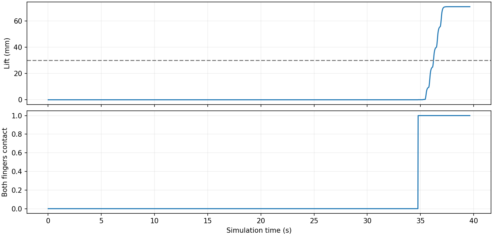

单相机基础抓取
目标：观察 → 对准 → 接近 → 夹取 → 抬升 → 保持。单腕部 RGB 与自身指令历史驱动；这是物理仿真基线，不是实机或完整积木搭建验收。
已完成独立测试中的成功数3 / 5成功率 60%；计划 5 个场景
历史开发成功70.1 mm抬升；连续双指接触 3.66 s
独立测试成功回放
视频按仿真时间播放；每 10 个控制步保存一帧。下图来自独立评价器，数据没有反馈给控制器。

逐场景结果快照
固定策略版本，随机位置、偏航与灰度材质，单块直立 2×4 积木。成功需同一积木抬升至少 30 mm，并连续保持双指接触至少 2 秒。没有焊接、吸附或运行中修改物体位姿。
批次已完成；开发调参种子不计入上述成功率。样本较少，结果不能外推为任意摆放、遮挡、堆叠或实机成功率。
策略 SHA-256：53219fb32cce1d64c59b823d19e4f7b3b80d1b9f577df8ac282b1d1ef1bee0fb
批次原始记录
负对照与能力边界
同一策略、场景 52001 的持续张爪负对照：流程未完成，不能证明夹爪负对照有效；最大抬升 0.0 mm，连续双指接触 0.00 s。
补充机械对照：回放成功场景 52001 的相同关节指令，只改变夹爪开合。此回放不是在线视觉策略，不计入上方成功率。
| 回放条件 | 抓取验收 | 最大抬升 | 连续双指接触 |
|---|
| 原始指令 | 通过 | 71.0 mm | 3.42 s |
| 夹取后持续张爪 | 失败 | 0.0 mm | 0.00 s |
支持闭爪动作产生真实物理夹持。
当前使用图像轮廓、光流和主动试探估计图像雅可比，含固定夹爪外观与矩形积木假设。未证明任意物体抓取、自动放置、LEGO 插接或完整说明书搭建；预训练预测误差不作为物理成功率。